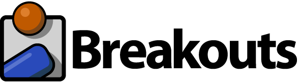

building breakouts with_frozenjs
april 25th 2013
Breakouts is the TodoMVC of html5 games.

If you're looking for a framework for building Single Page Applications, you'll want to visit the TodoMVC project. TodoMVC is a collection of several implemenations of a simple Todo web applications using various toolkits and frameworks.
Similarly, to make an informed decision on which HTML5 game engine to use you'll want to compare implementations of the same game. Mat Greer's Breakouts project does just that using the classic game Breakout as the target.
As of this writing, the FrozenJS implementation of Breakout is the latest. We had fun implementing the game, and think our version is particularly good.
The FrozenJS game engine.

From our website:
Frozen is an open-source HTML5 game engine delivering ease-of-use, rapid development through tooling and modularity.
Our goal is to apply techniques used in building modern webapps to game development, such as AMD modules, dependency management, build process, and project scaffolding.
TL;DR; FrozenJS rocks.
Let's get started...
Scaffolding a game with Frozen
We'll assume your development machine already has a recent version of node.js, chrome or firefox, and a good text editor.
The easiest way to get started with Frozen is to use volo. Install volo if you don't already have it.
npm install volo -g
Use volo to scaffold out the project:
volo create MyGame frozenjs/boilerplate/boxgame
This did a few things for you:
It pulled in all the dependencies you need and put them into a deps folder. Created the HTML, CSS, and javascript files you'll need to get started writing your code. Sets up development configuration for linting, testing, and packaging
Now launch your game!
volo grunt
Point chrome to http://localhost:8080
ok, there isn't much of a game there yet... let's get into Breakout's code :)
Breakout code layout
The main entry point to the game is the game.js module.
//pull in some dependences...
var game = new BoxGame({
//a bit of intialization...
game.run();We pull in dependenices, configure a game instance, do a bit of initialization, and launch.
The rest of the modules for the Breakout game:
- typical game functions: handle player input, update the game state, and draw to the canvas.
- game classes: Ball, Brick, Paddle, etc.
- Also modules containing data for game levels and physics.
Aside from javascript and html, we have a resources folder containing the images and sounds from the original Breakouts project.
Breakout specific physics and logic
To simplify things we deferred the physics calculations of the game to box2d.
This allowed us to use the Frozen box2d physics editor. We dropped the pre-rendered game background into the editor and simply traced the walls in the game as static rectangles. That gave us the JSON we used in the walls.js module that we add to the box2d world intance in the game.
Physics tweaks:
Although it might appear that the balls fall towards the paddle in Breakout, we really don't wan't a realistic gravity set in our enviroment. In the game the ball moves in straight lines. With gravity the ball would curve back downward after being propelled upward from the paddle.
The restitution property for balls in the game is set to 1.0. This ensures that the ball will bounce back off of bricks and walls at the same force that it struck them with.
... and then everything went sideways
An interesting problem is that with zero gravity, a ball could potentially get stuck bouncing back and forth horizontally where it's not hitting a brick, but doesn't fall back down towards the paddle. To solve this, we check the linear velocity for each game loop iteration, and if the velocity stays horizontal a couple times in a row, we push the ball downwards. This happens quickly enough, that it isn't really perceptable to the user.
One last thing: The paddle.
The paddle is a dynamic box2d object that is pinned horizontally by use of a Prismatic Joint.
In the game breakout, players have control of which direction the ball launches towards the bricks by the position that the ball strikes the paddle. Just handing that off to box2d would result in the ball rebounding normally as though it just hit another wall.
To solve this, when there's a collision with a ball and the paddle we check the distance from the center of the ball to the center of the paddle and apply an upward impulse between -45 degrees (left corner of paddle) to +45 degrees (right corner).
Packaging it all up
While developing, having a bunch of little modules is great. We can separate our logic into small re-usable components. However when we're ready to share our awesome game, we want to bundle the javascript into a single minified file so that it quickly loads into the browser.
To do this we simply have grunt run the build process:
grunt build
That command outputs all of our game's code and dependencies into a single game.js file in the dist folder. The HTML file that loads the game actually tries to use that single file first, so you don't have to make any changes to the HTML to load this compressed version.
If you want to remove the compressed version and continuing developing your modules you can run:
grunt clean:dist
Conclusion
We learned a few things.
Use lodash
Lodash is a great general purpose javascript utility library. It has everything that underscore has, but with much better performance.
Sixteen milliseconds to handle user input, update game state, and render to the screen is not very much time. You'll want to make sure that common low-level javascript tasks perform as quickly as possible.
Also, we tended to often re-imlpement certain javascript functions in various games. With lodash we were able to DRY up quite a bit of code. Because it supports AMD, we were able to easily include it in our project and build it into our minified javascript output.
Lodash will be built into the next version of FrozenJS.
Screens/Scenes
Although it uses the same background, there's a few state changes in the game: The start screen, the game playing, and the game over screen.
This isn't difficult to handle in the update and draw methods of this simple game, however we feel that it could be a bit easier. In the next version of FrozenJS we'll have something to clean that type of code up a bit.
This was a fun experiment.
It showed where FrozenJS shines as well as places that things could be a little better. If you want to get into HTML5 game development, our Breakouts source is not a bad place to start. If you're creating a game engine, I encourage you to implement Breakouts.